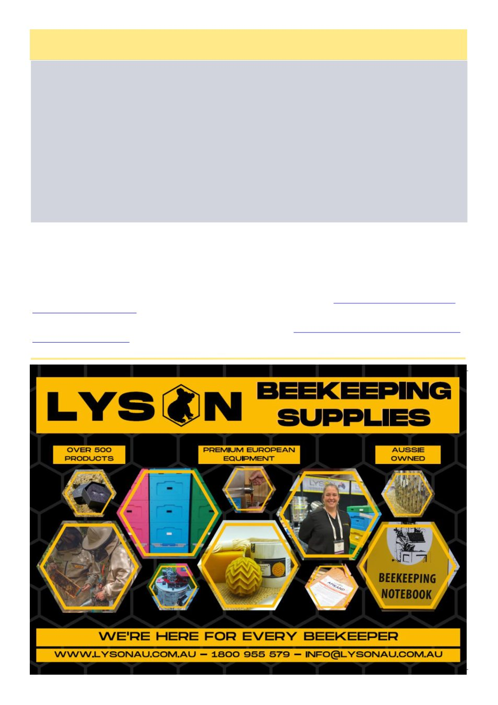

August 2026
11
(Continued from page 10)
Calculation (With thanks to Ian Farrance)
A binomial variance and coverage interval may be determined for a single measurement (a single 300 bee count). In
this situation, the variance is determined by the integer count of the particular item (m) counted: for example, if n
items are taken for counting, the variance of the counts is m(1-m/n); where m is the integer count of a particular item
and n is the number of items taken for counting. Here, n = 300 and m = number of mites counted.
Let‘s say you count 20 mites (m = 20) on 300 bees (n = 300) … variance = 20 (1-20/300) = 20*0.94 = 18.67. And
standard deviation = square root of variance = 4.32. If this is truly representative of the whole population, a 95%
confidence interval for a binomial distribution can be determined by a statistical procedure known as the ‗Clopper-
Pearson‘ interval. Even though the statistics behind this procedure are quite complicated, there is an internet calcula-
tor which appears to work well or the confidence interval can be calculated using Excel.
For a 95% confidence interval using the Excel procedure (α = 0.05):
Lower interval as a % = (BETA.INV((0.05/2),m,(n-m+1)))*100
Upper interval as a % = (BETA.INV((1-0.05/2),(m+1),(n-m)))*100
Thus, for the example of 20 mites on 300 bees, the percentage of bee contamination is 20*100/300 = 6.67%, with a
confidence interval of 4.12% to 10.11%. More correctly however, these figures should probably be expressed as
whole numbers due to the range of values (the ‗uncertainty‘) involved: 7%, 4% and 10%.
3. Riley, Steve. The Honey Bee Solution to Varroa. Northern Bee Books, 2024.
4. Hall, Richard and Hayley Pragert. ―Re-imagining varroa monitoring: a practical approach,‖ New Zealand Bee-
keeper Oct/Nov (2023): 19-21. https://www.mpi.govt.nz/dmsdocument/59209-Re-imagining-varroa-monitoring-A-
practical-approach
5. Branco, Manuela R., Neil AC Kidd, and Robert S. Pickard. "A comparative evaluation of sampling methods for
Varroa destructor (Acari: Varroidae) population estimation." Apidologie 37, no. 4 (2006): 452-461.
6. Oliver, Randy. ―Re-Evaluating Varroa Monitoring: Part 1 – Methods.‖ (2025). https://scientificbeekeeping.com/
7. Evans, David. ―Natural mite drop.‖ (2024) https://theapiarist.org/natural-mite-drop/
8. Oliver, Randy. ―Smokin‘ Hot Mite Washin‘- 2025 Update.‖ (2025). https://scientificbeekeeping.com/smokin-hot-
9. Fricke, Kris. ―Prophylactics.‖ Australian Bee Journal 107, no. 5(2026): 16-18.
Don’t Drop The Mite Drop!